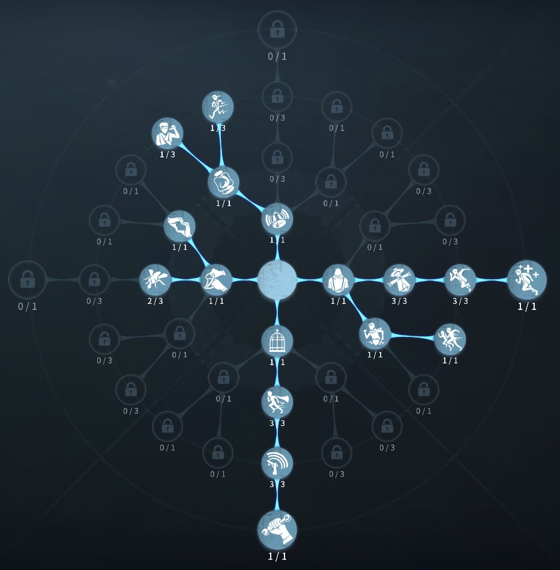
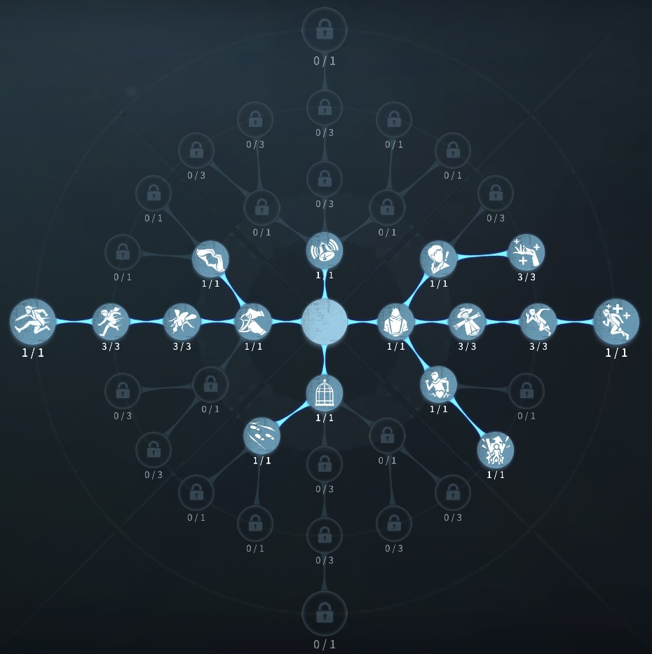

調香師の評価
香水でハンターの攻撃を無効化！？
外在特質と特徴
特質1:忘却の香
・調香師は香水を3つ持っており、香水を使うことで最大5秒間その時のダメージや状態、場所を記録する、もう一度制限時間内に使うことで香水を振った時の状態、ダメージ、場所に戻れる。・調香師が脱落し、遺された忘却の香水を他のサバイバーが拾っても最大で2つまでしか所持出来ない。
特質2:記憶喪失
・解読調整に失敗したときのゲージの減りが3倍になる。特質3:敏感
・治療に必要な時間が15％増加する。特徴
香水を上手く使うことで無傷状態をキープし続ける ことができる。香水を使って救助に行くことで、無傷で生還することが できる。
基本的な立ち回り方
1. 追われた時
とにかく殴られそうだと思ったら、惜しみなく香水を使うことが大事。
負傷で使う香水と無傷で使う香水には運例の差があるので、できれば無傷をキープしたい。
また香水を使いながら、強いポジションに逃げ込もう。
2. 追われない時
解読に専念する。
調香師は危機一髪採用をする時があるため
状況をみて救助に行く。
通電前の壁粘着を挟むこともあるかも
おすすめの内在人格
危機一髪型人格
この内在人格は、尻に火で板倒しを早く、癒合で調香師の治療デバフを補う人格

膝蓋腱反射型人格
この内在人格は、接触効果を最大まで採用することで香水ダメージ無効後、加速を得られるため強いポジションに移る人格


みんなのコメント